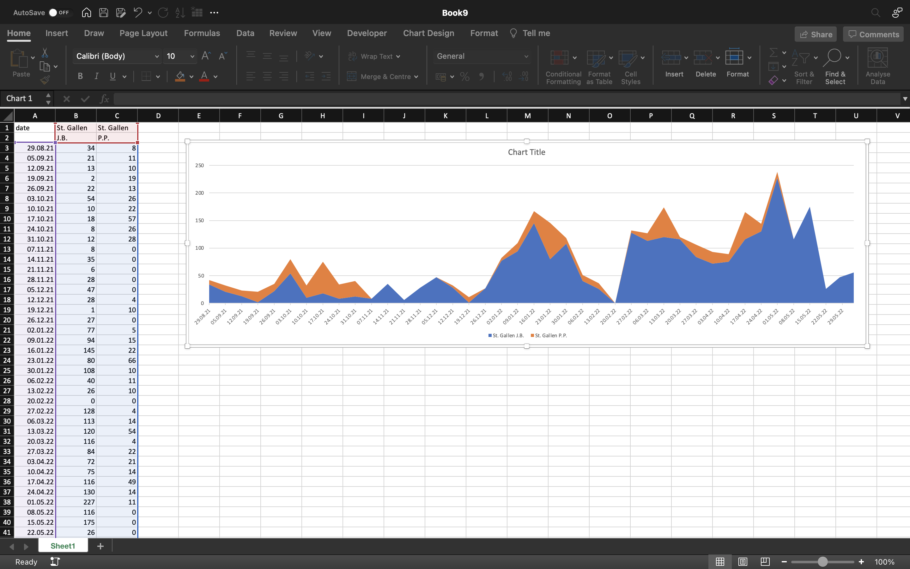
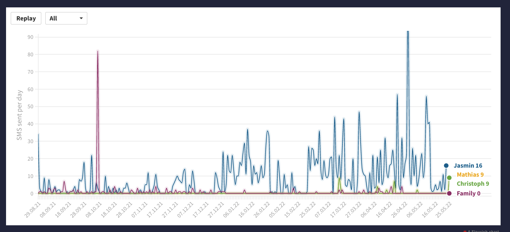
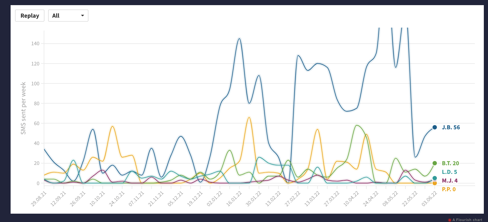

Visualisation Process
While clicking trough WhatsApp, I discovered the possibility to export your conversations as a .txt file. I thought that this would be a great dataset for a visualisation about me. In a first step, I coded a python program that extracts the number of messages I've sent on a particular day to someone. Then, I inserted that output into excel and this is what the first draft of my visualisation looked like:
I selected chats which might have interesting patterns. Then I uploaded this data to flourish in order to make it more interactive and visually appealing. At that stage, the result looked like this:
At this point, I was convinced of the concept and decided to thing about the details. A problem which became quickly apparent was the daily frequency. I had so many individual data points, that the time series looked rather jagged, and the animation took too long. To solve those issues, I coded a R-Script which took the time series data and aggregated it to a weekly frequency. Ultimately, the plot looked like this:
Last but not least, I realised that I needed to give some additional information about the people in the visualisation. Like that, people who don't know my contacts personally can read this plot in a meaningful way.
| Person | Relation |
|---|---|
| J. B. | A friend who is studying economics with me. We learn a lot together and many texts are about school. |
| B. T. | A friend from a students' association. |
| L. D. | A childhood friend. We meet in person more often than we text. |
| M. J. | My sister. Most messages are about organising family things. |
| P. P. | A guy I've dated for a while. |